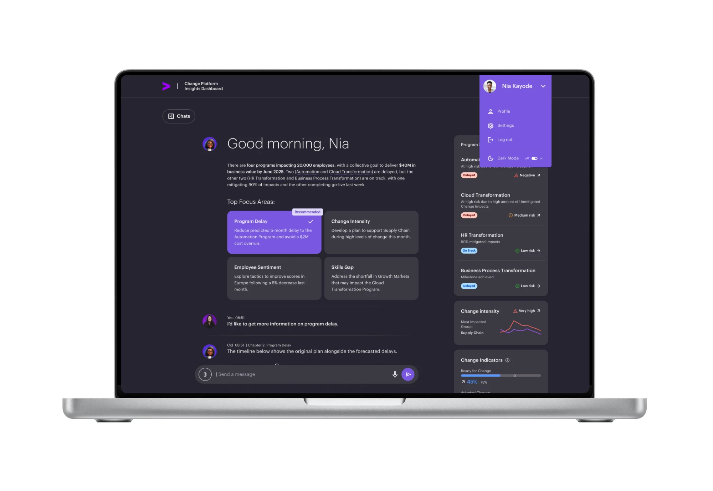
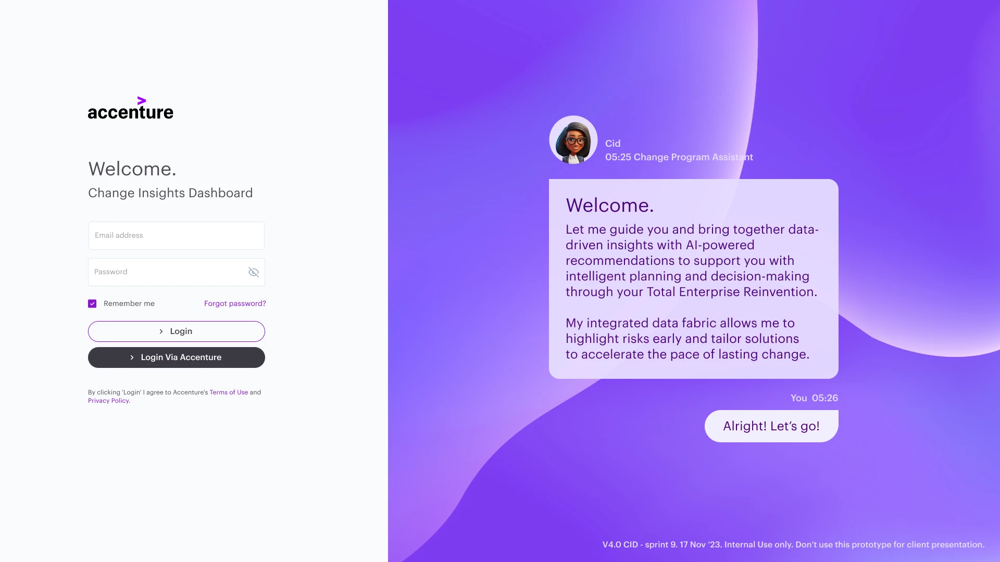
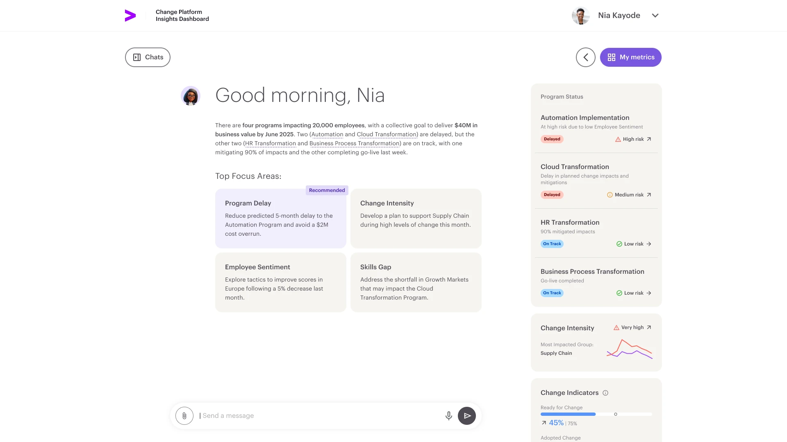
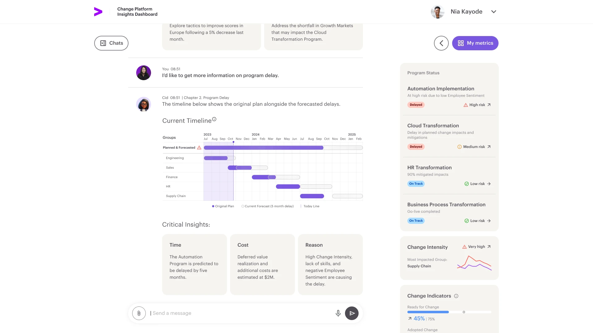
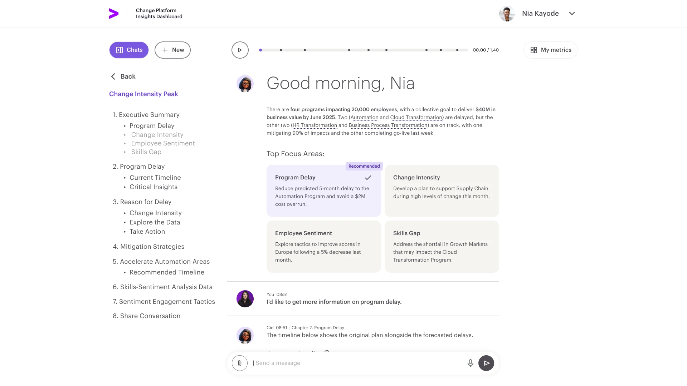

Accenture Change Platform
Stay on top of business changes with AI-curated insights that help you track, analyze, and predict key management success metrics.

Project overview
Timeframe
06 months
My role
- Full-stack design lead (Research, UX/UI, Service)
Tasks
- Lead the design of a conversational AI-driven platform.
- Define the design strategy and guide UX/UI research and development.
- Facilitate communication between stakeholders and the design team.
Challenge
As LLMs started making news, Accenture saw the opportunity to leverage its industry expertise to build a first-of-a-kind AI-driven change management platform. Starting without many references for such a project, we draw inspiration from all parts of Accenture's consulting business, interviewing from experts of many industries to C-level managers, to design what we envisioned to be a truly disruptive app.
Exploring
the design
Guided tour into insights
A lot of my time was dedicated to extracting feedback and commentary on the existing design solutions for nnamu Negotiations, with the mind of not only finding the pain points to be solved, but also identifying opportunities for the new gamification and little delights in the user experience.


Instant summary and documentation
As conversations with the assistant happen, they are automatically indexed and documented. Yet, they keep evolving as living documents, being updated with each interaction.
Playback navigation of conversations
As powerful as the documentation is, we designed an easy way to navigate and retrieve knowledge from them through a playback function. This orients the user in the evolution of the conversation and gives them the chance to understand the entire context.

